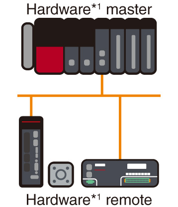
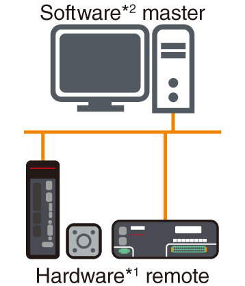
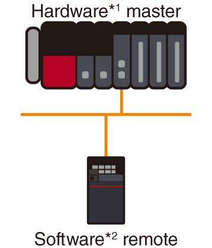
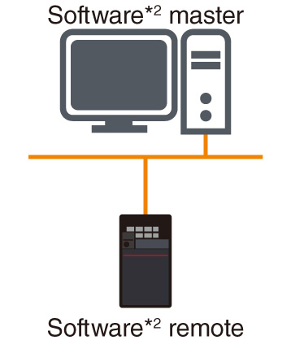

Network-related products |
Programmable Controllers MELSEC
CC-Link IE TSN Features

Connectivity
Combining real-time control and TCP/IP communicationTSN Technology
- Standard Ethernet
- Utilize TSN technology
- Mixed communications
Supporting standard Ethernet enables various network-compatible devices and diagnostic software to be used, realizing an integrated network infrastructure that is easy to maintain. Ethernet communications supporting TCP/IP communication such as information that has been collected and analyzed by edge devices and IT systems can be mixed in the same line with the real-time control communications of CC-Link IE TSN.
Easy replacement of remote devices
- Shorter startup
Network station parameters that are stored in the CPU module are automatically distributed to remote devices when initializing the network and when returning disconnected stations to the network. Individual registration of the parameters to each station is unnecessary after replacing remote devices.
Flexible system configuration with multiple topologies
- Flexible system
Line, star, and ring topologies are supported, allowing a flexible system configuration. Use line topology for high-speed, high-performance control. This is realized when a system is configured with CC-Link IE TSN-compatible device stations only without additional branch lines. Choose a star topology if a more flexible system configuration is needed. Using Ethernet switches, device stations can be easily distributed to achieve the desired system configuration. Ring topology is ideal for systems requiring high reliability. Data communications continue with normal stations even if a cable is disconnected or an error occurs on a device station via multi-directional communication.
Line topology
Star topology
Ring topology
Integrate other network devices
The CC-Link IE TSN Plus master/local module (RJ71GN11-EIP) supports both CC-Link IE TSN and EtherNet/IP™. One port can be connected to the CC-Link IE TSN network, whilst the other port can be connected to the EtherNet/IP™ network. Even if both networks are used simultaneously, functions similar to the CC-Link IE TSN master/local module can be used without affecting the CC-Link IE TSN communication performance. Both networks are easily settable within the engineering software GX Works3.
Visualization of sensors and space-saving
- Sensor connection (iQSS)
The AnyWireASLINK bridge module integrates AnyWireASLINK-compatible sensors via CC-Link IE TSN. Settings and diagnostics of AnyWireASLINK-compatible sensors are easily done from the engineering software GX Works3 by connecting to a programmable controller via a network.
Highly scalable system utilizing best-in-class devices
- Various devices
Supports implementation of high-performance devices realized with a dedicated ASIC/FPGA, and low-cost devices using a software protocol stack on a standard Ethernet chip.
| Item | Configuration 1 | Configuration 2 | Configuration 3 | Configuration 4 |
|---|---|---|---|---|
| System configuration |  |
 |
 |
 |
| Transmission speed | ||||
| 1 Gbps | ● | ● | ● | ● |
| 100 Mbps | ● | ● | ● | ● |
- *1.Hardware master/remote: Development with dedicated LSI (ASIC, FPGA)
- *2.Software master/remote: Development with software protocol stack (standard Ethernet chip)